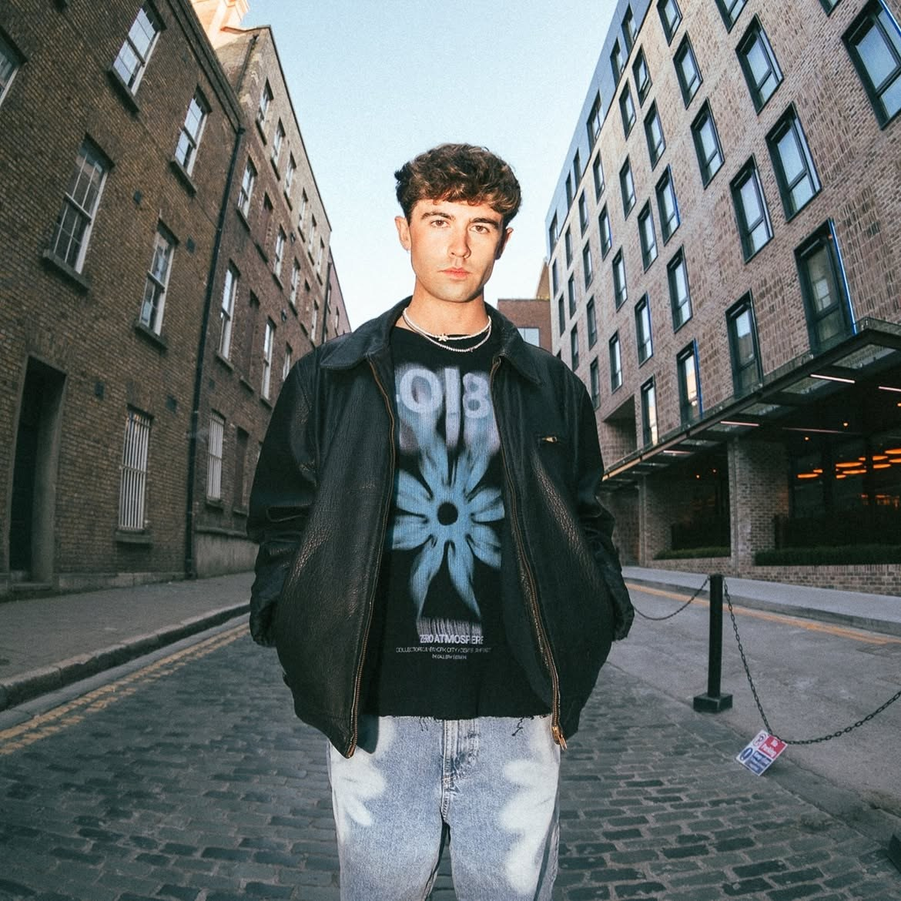
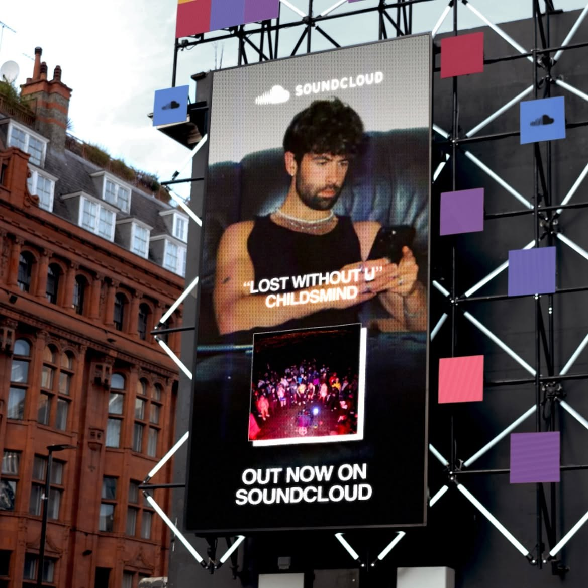
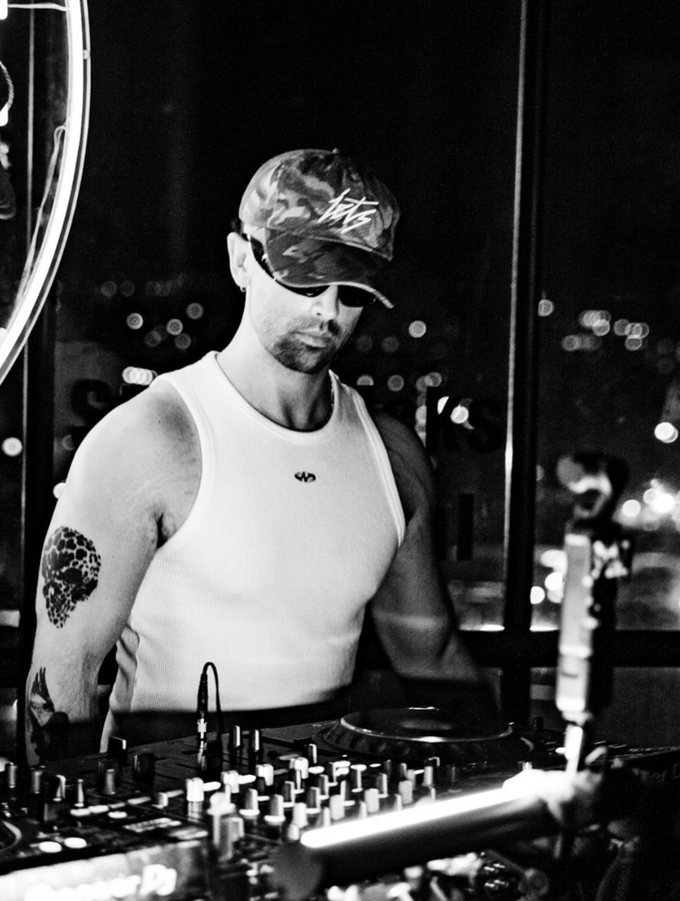

Ten years behind the decks. Released via WUGD (Jax Jones’ imprint), 3M+ streams, played on BBC Radio by Sarah Story. Open format and house, festivals to private events, plus a 74,000-strong audience I bring with me.

Open format. Everything from commercial house to the classics that fill a floor. Built for parties, bars and private events.
House-led and dance floor focused. For late rooms, clubs and terraces.
A live festival set: hard groove, house, trance and garage. Recorded in front of a crowd.
Open format party classics across three decades. For weddings, private events and crowd-pleasing bar sets.
Ten years behind the decks. I have released via WUGD, the imprint founded by Jax Jones, passed three million streams across Spotify and SoundCloud, charted on SoundCloud’s electronic chart, and been played on BBC Radio by Sarah Story. I have warmed up for Jax Jones, Hannah Laing and Matt Guy.
I play every format. House, commercial, club classics, disco, RnB and open format for bars, weddings and private events, through to tech house and harder underground sounds for club sets. Ten years of reading rooms means I play the crowd in front of me rather than a prepared setlist, and I can move between genres without losing the floor.
I am also a trained producer with an HND in Music Production and release my own original music.
Released via WUGD (Jax Jones’ imprint) · 3M+ streams · charted on SoundCloud’s electronic chart · played on BBC Radio by Sarah Story · warmed up for Jax Jones, Hannah Laing and Matt Guy · played Lab54 and brand-sponsored nights including X-LITE · featured in Hotpress, Four/Four and other leading music publications.
Most DJs turn up and play. I turn up, play, and fill the place.
I have built a 60,000-strong social following and 14,000 people across my WhatsApp communities, from scratch, with no ad spend. The community is the part that matters: it consistently outperforms social reach for actual attendance, because those are people who show up rather than people who scroll past.
Every night I play, I promote. Announcement posts, event content shot and cut on the night, same-night clips live before Sunday morning. Venues get a DJ and a marketing channel in the same booking.
I also run my own event series, eight shows delivered with peak attendances of 600, so I understand a night from the promoter side as well as the booth: how a room builds, why the last hour matters, and what actually sells tickets.

“Lost Without U” featured by SoundCloud on a billboard in central London.

Residencies, clubs, festivals, weddings, private parties and corporate events. London and beyond. Get in touch for availability and rates.